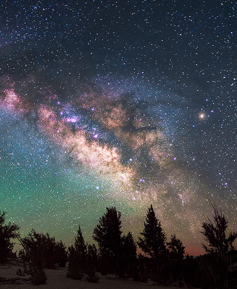
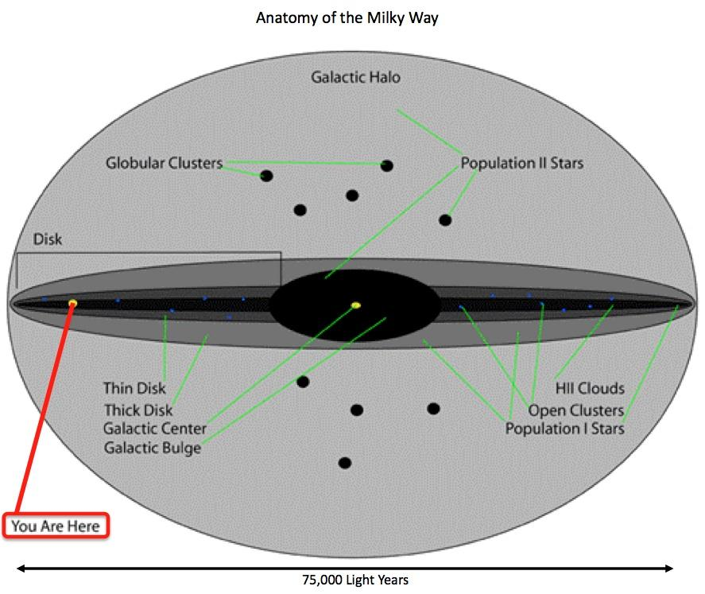
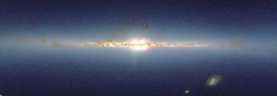
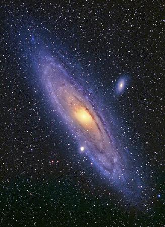

ASTR 1230 (O'Connell) Lecture Notes
6. GALACTIC ASTRONOMY
{kind=link}
Spiral galaxy NGC 1232 (ESO VLT)
A. INTRODUCTION TO GALACTIC ASTRONOMY
Even a casual familiarity with the sky reveals that the stars are unevenly distributed. For instance, the region containing the "watery" Zodiacal constellations like Capricorn, Aquarius, and Pisces in the autumn sky, contains few bright stars compared to the area between Lyra and Scorpio in the summer sky or the region of the "Winter Hexagon." {kind=link}
- The picture at the right shows the concentration of stars to the
brightest part of the Milky Way in a long exposure digital camera
image. Click for an
enlargement. Here is a
wide-field image showing the strong asymmetry in the northern
sky.
{kind=link}
-
Thus, even very simple observations about the distribution of
stars in the sky can lead to interesting and important conclusions.
B. HISTORY
A question about "the structure of our star system" would have made no sense to pre-Copernican astronomers because in the ancient geocentric cosmologies, the stars were thought to be small luminous bodies fixed to a crystalline sphere centered on the Earth and rotating about Earth once a day. In this model, the stars had no distribution in depth, and they had no relationship to the Sun. There were thought to be no more than a few thousand of them (those visible to the naked eye).{kind=link}
(1) Post-Copernican Structure
-
Copernicus (1543) showed that the apparent motions of the Sun and
stars in the sky were not intrinsic to them but rather were caused by
motions of the Earth. Copernicus argued that the Earth was a spinning
planet in orbit around the Sun and did not occupy a central position
in the universe.
With the consequent demise of the crystalline sphere model, it was
possible to conceive of the stars being distributed in depth in space,
possibly even to infinity. One of the earliest such concepts,
by Thomas Digges (ca. 1580), with "the orb of stars fixed infinitely
up," is shown below (click for full version):
{kind=link}
{kind=link}
- Knowing the distances,
astronomers could estimate the luminosities of the stars, and those,
combined with the application of physics to the spectra of stars,
proved that the stars and the Sun had similar intrinsic properties.
See Lecture 5 for more
details.
(2) Deep Telescopic Probes
-
Telescopes made it possible to probe the structure of our star system
by counting stars in various directions.
-
If you assume that
all stars have the same intrinsic brightness (luminosity), the counts at each
magnitude can be converted into star densities at different distances.
We know now that stars have a large range of luminosities,
but the technique still works if stars have the same average
luminosities in all directions.
{kind=link}
Herschel found the Sun to lie near the center of this flattened distribution of stars. In 1910, Kapteyn made a much more sophisticated survey of star positions and motions but came up with essentially the same result, with the Sun in the center of a somewhat more flattened disk of stars. These pictures were plausible, but they placed the Sun in a special location and therefore had enough of an "anti-Copernican" flavor to make some astronomers uncomfortable. It was important to find a tracer other than ordinary stars. In 1920, Shapley used globular star clusters as a tracer.
{kind=link}
{kind=link}
-
Clusters were valuable first because
they are up to 100,000 times brighter than a single star like the sun
and second because they contain RR Lyrae-type variable
stars whose properties can be used as distance indicators.
Click here for an
animation showing how variables appear in a globular cluster.
{kind=link}
C. STRUCTURE OF OUR GALAXY
Shapley's picture has been refined considerably. An edge-on sketch of our star system based on our current understanding is shown at right below: {kind=link}
- We live in a spiral galaxy, a large, disk-like, slowly rotating star system.
- Face-on, it would look somewhat like the picture at the top of this page. An artist's conception of a more inclined view of our Galaxy is here.
- The "spiral arms" are conspicuous because they contain bright generations of young stars; but the overall mass contrast between the arms and the background disk isn't as large.
- Our Galaxy is huge. It contains about 100 billion solar masses of material, and every star you can see, even with a moderately large telescope, is in our Galaxy.
- The Sun definitely resides in its outskirts, at a distance of about 25,000 light years from the center. The whole galaxy would be roughly 75,000 light years across.
- [Reminder: a light year is the distance light travels in one year. This is about 1013 km. The parsec is a distance unit based on the size of the Earth's orbit. It is about 3.1 x 1013 km or 3.25 light years.]
- The dense, central part of the Galaxy is inflated into a more
spherical structure, or bulge. The bulge in
the galaxy shown at the top of the page is
redder than the spiral arms because its stars are older, on
average. This is true of our Galactic bulge as well. Some matter in
our Galaxy is distributed in a low density
spherical halo that extends to large distances. The
globular clusters Shapley studied are associated with the halo.
- Younger stars, interstellar gas, and dust are concentrated to the disk, or "plane," of the Galaxy.
-
Interstellar dust is the fine haze of
smokelike particles
that is distributed between the stars.
Dust is visible as the dark
lanes in the star forming regions illustrated in
Lecture 5 and also in the dark rifts in the Milky Way in the
picture at the beginning of the next section.
Dust scatters and absorbs
optical light. If there is enough dust in a given direction, it can
totally obscure our view of distant regions. Like ordinary dust
in Earth's atmosphere, which can produce strikingly red sunsets,
interstellar dust also
"reddens" starlight.
- The Sun is roughly centered vertically in the Galactic plane. The stars we can easily see are therefore mostly associated with the disk. Owing to the interstellar dust, we can see only to distances of a few thousand light years in the plane of our galaxy with ordinary (optical-band) telescopes. Because this region is roughly symmetrical, star counts misled early astronomers into thinking we were near the center of the Galaxy.
- Younger stars, interstellar gas, and dust are concentrated to the disk, or "plane," of the Galaxy.
{kind=link}
{kind=link}
{kind=link}
Panoramic mosaic of Milky Way.
Click for
explanation and orientation.
D. THE MILKY WAY
- The visual-band photographic panorama above shows a 360o view from the Sun's location of the Galactic plane, which we see, of course, edge-on. Our view of the central part of the Galaxy is partly obscured by dust clouds, which produce the dark blots and rifts in the picture. For more information on the panorama and identification of important features, click here.
- When we look in the plane of the Galaxy, we see many
stars, often bright ones---e.g. in Scorpio, Cygnus, Auriga,
Orion, and Gemini. We also see the combined glow of millions of
fainter, distant disk stars too faint to resolve individually. This
is what produces the band of diffuse light in the night sky we
call the "Milky Way."
-
The center of the Galaxy is in the direction of Sagittarius,
(at the center of the picture above). To get a sense for the density
of stars in this direction,
see this remarkable
mosaic.
The Galactic "anti-center" is 180 degrees away from Sagittarius in the
direction of Auriga (at the left and right edges of the
picture). The Milky Way is less conspicuous toward Auriga because the
density of matter in the disk falls off with distance from the center,
and we are looking toward the outer disk in this
direction.
- When we look perpendicular to the Galactic plane, we see
few stars. The Galactic poles are the directions
exactly perpendicular to the plane (at the top and bottom of the
picture); they lie in the constellations Coma Berenices (north)
and Sculptor (south). These directions are free of dust, and
here we can therefore see out of our Galaxy into
extragalactic space.

- Dust obscures our view of the central part of the Milky Way at visible wavelengths. However, infrared telescopes can penetrate the dust haze, since dust has less effect on infrared light. Above is an image of the galaxy, similar to that shown at the beginning of this section, but made at infrared wavelengths by the 2MASS All-Sky Infrared Survey (directed by UVa Prof. Mike Skrutskie). At these wavelengths, we can see the bulge and inner disk of the galaxy without interference from dust.
{kind=link}
{kind=link}
{kind=link}
E. OTHER GALAXIES AND THE FAR UNIVERSE
Our Galaxy is an astonishingly massive structure, and for several decades at the beginning of the 20th century most astronomers believed it constituted the entire universe. But it was soon realized that the Galaxy is only one of innumerable building blocks of comparable or larger scale in the universe. Shapley had used RR Lyrae variable stars to determine distances to globular clusters within our Galaxy. Shortly afterwards, Hubble (1923) applied a similar technique, using intrinsically luminous Cepheid variables, to estimate the distance to the brightest of the many faint, diffuse "spiral nebulae" which had been first recorded about 125 years earlier. [Note: Cepheid variables are the subject of ASTR 1230 Lab No. 6.]  By this method, Hubble was able to demonstrate conclusively that Messier 31 (the "great nebula in Andromeda") is an independent star system outside our own, at a distance now estimated to be 2.5 million light years (see picture at right; click for a larger view). Although the more evocative term "island universes" was used for a while, external star systems quickly became known as galaxies and our own star system as the Milky Way Galaxy. ("Galaxy" is derived from the Greek root for "milk.") Two galaxies in the northern hemisphere are visible with the naked eye or binoculars: M31 in Andromeda and M33 in Triangulum. M33 is quite faint, but M31 is readily visible on a dark night. In the southern hemisphere the Large and Small Magellanic Clouds are conspicuous; they are small satellite galaxies of the Milky Way.{kind=link}
{kind=link}
{kind=link}
{kind=link}
-
M31 is the most distant object you can see with the naked eye. The
locations of M31 and M33 are shown on the map below:
All four of the naked-eye galaxies are members of a loose association
of galaxies (including ours) called the Local Group. Of
these, only M31 is comparable in size to our own galaxy. Apart from
the Magellanic Clouds and M33, the other Local Group systems are
"dwarf galaxies," and are mostly not observable with small telescopes
despite their proximity.
{kind=link}
{kind=link}
{kind=link}
-
Imaging with photographic or
electronic cameras is needed to bring out full details. At right is a
galaxy image taken by UVa undergraduates in ASTR 3130 using
a CCD camera.
-
We are still early in our understanding of the life cycles of
galaxies. Only in the last 40 years, for instance, have we realized
that galaxies can undergo violent gravitational interactions with one
another, sometimes leading to "tidal disruption" or, alternatively,
"mergers" and wholesale transformation of morphologies.
We now
think that our Galaxy will eventually merge with M31 (several billions
of years in the future).
Here is a supercomputer simulation of what such a
merger would look like. Note that the product of the interaction
looks nothing like the two spiral galaxies that went in.

-
The "Hubble Ultra Deep Field" (part of which is shown above) is
the deepest image yet obtained of distant galaxies. Many of the
galaxies in such deep images look disturbed or peculiar since they are
still in the process of formation (and have recently interacted
with others because the distances between galaxies were smaller then).
More information on how the Deep Field was imaged and the scientific
questions that can be pursued about the early evolution of the
universe using this data is available here.
Assignment:
- Download, print, and read the webnotes for this lecture.
- Take the Review Quiz for week 7 on Collab
- Supplementary reading: The best resource for this material is a good ASTR 121/124 textbook.
- Finish Lab 3 at the earliest opportunity.
-
Recommended:
 Milky Way Panorama with Identifications
Atlas of the Universe, a multi-scale map of
our universe starting from the Solar System and extending outward to a
scale of 15 billion light years. By Richard Powell.
Milky Way Panorama with Identifications
Atlas of the Universe, a multi-scale map of
our universe starting from the Solar System and extending outward to a
scale of 15 billion light years. By Richard Powell.
The Shapley-Curtis Debate (1920). Information on a famous debate concerning the structure of our Galaxy and the local universe. H. D. Curtis was one of the first PhD students in astronomy at UVa.
Background information on Edwin Hubble
Nick Strobel's Astronomy Pages for background information on stellar and galactic astronomy.
The Multiwavelength Milky Way
Background information on Cepheid variable stars and their use as distance indicators.
Hubble Space Telescope Image Gallery---best site for space-based pictures of astronomical objects.
The Messier Catalog--- information and links for the brightest nebulae, stars clusters, and galaxies
Tutorial on infrared astronomy
Information on the Hubble Deep Fields
HST/WFC3 Identification of Very Distant Galaxies---seen only 600 million years after the Big Bang
 Previous Lecture
Previous Lecture
|
 Lecture Index
Lecture Index
|
 Next Lecture
Next Lecture
|
Last modified December 2020 by rwo
M31-M33 map copyright © Hawaiian Astronomical Society. Image of Milky Way star clouds copyright © M. Shainblum. Image of M31 copyright © G. Greaney. Nick Strobel. Galaxy merger animation by John Dubinski. Text copyright © 2000-2020 Robert W. O'Connell. All rights reserved. These notes are intended for the private, noncommercial use of students enrolled in Astronomy 1230 at the University of Virginia.